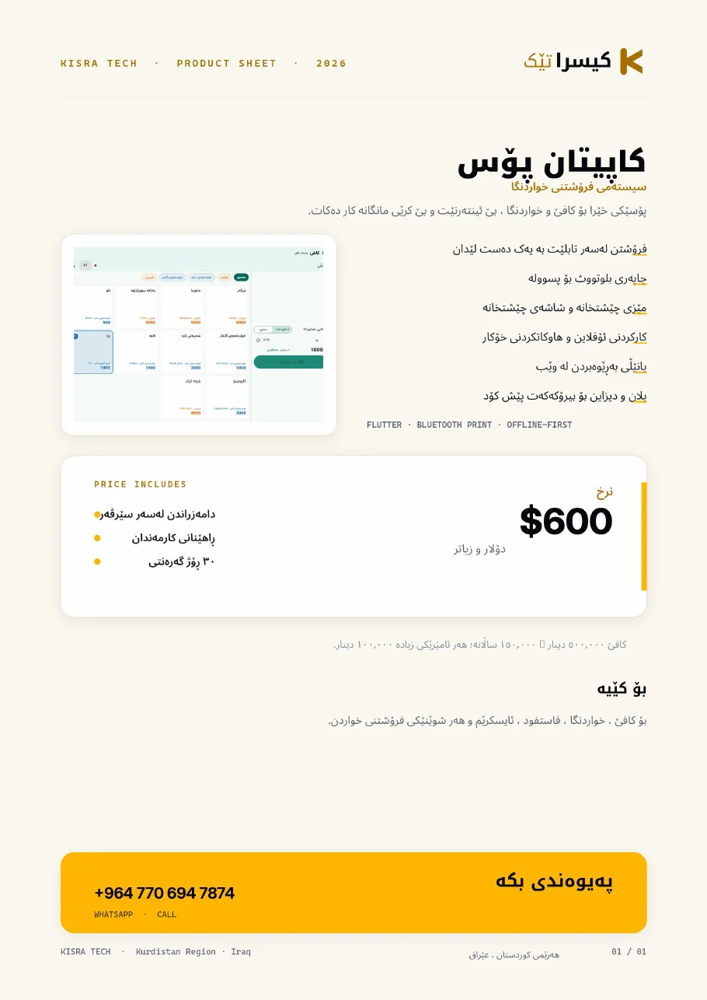

کاپیتان پۆسKapitan POS
پۆسێکی خێرا بۆ کافێ ، خواردنگا و چێشتخانە . بێ ئینتەرنێت کار دەکات.A fast POS for cafés and restaurants — works fully offline.

دەربارەی کاپیتان پۆسAbout Kapitan POS
کاپیتان پۆس لەسەر ئامێرەکانی خۆت کار دەکات: تابلێتی گارسۆن، تابلێتی چێشتخانە و تابلێتی کاش — تەنها وەک پاڵپشتی، داتا دەکاتە کلۆد. ئەگەر وایفای بپچڕێت، فرۆشتن ناوەستێت.Kapitan POS runs on your own devices: waiter tablet, kitchen display and till — the cloud is only a backup. If the Wi-Fi drops, selling does not stop.
چی لەخۆ دەگرێتWhat it includes
- فرۆشتن لەسەر تابلێت بە یەک دەست لێدانSell from a tablet in one tap
- چاپەری بلوتووث ٨٠ ملم بۆ پسوولە80 mm Bluetooth receipt printing
- مێز و شاشەی چێشتخانە بەیەکەوەTables and kitchen display linked
- کارکردنی ئۆفلاین و هاوکاتکردنی خۆکارOffline-first with automatic sync
- پانێڵی بەڕێوەبردن لە وێبWeb management panel
- سێ زمان و مێنیوی فرە زمانThree languages, multilingual menu
شاشەکانScreens


داگرتن و کاتالۆگDownloads
هەمان زانیاری بە PDF — بۆ ناردن بۆ کڕیار یان چاپکردن.The same material as PDF — to send to a client or print.

پرسیارە باوەکانCommon questions
پێویستی بە کۆمپیوتەر هەیە؟Do I need a computer?
نەخێر — تەنها تابلێت و چاپەرێکی بلوتووث.
No — just a tablet and a Bluetooth printer.
ئینتەرنێت پێویستە؟Is internet required?
نەخێر. سیستەم ئۆفلاین کار دەکات و کاتێک ئینتەرنێت هەبوو خۆی هاوکات دەکات.
No. It works offline and syncs automatically when internet returns.
با کاپیتان پۆس دابنێینLet’s set up Kapitan POS
پەیوەندی بکە، کارەکەت دەبینین و پێشنیارێکی ڕوون دەدەینەوە.Tell us what you run today. You get a clear plan and a price.